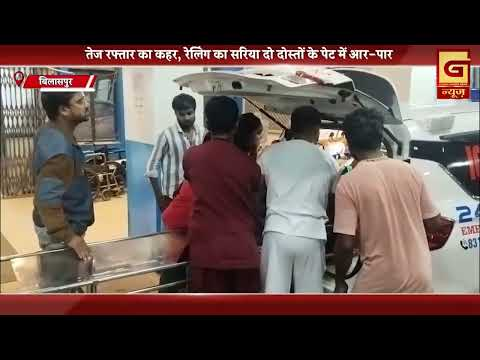
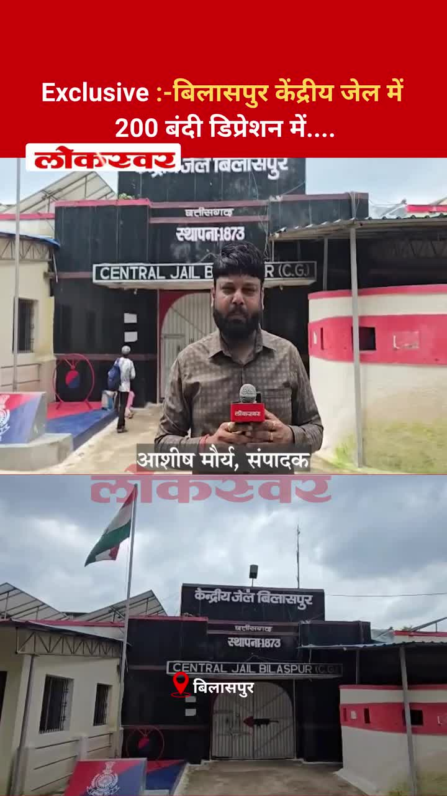
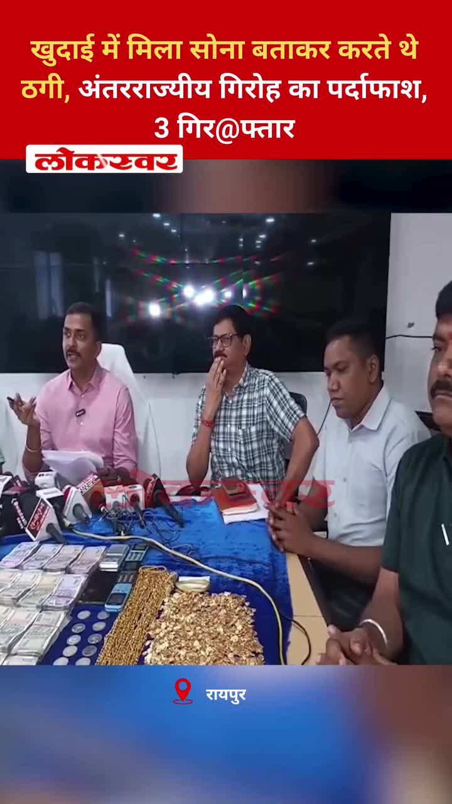
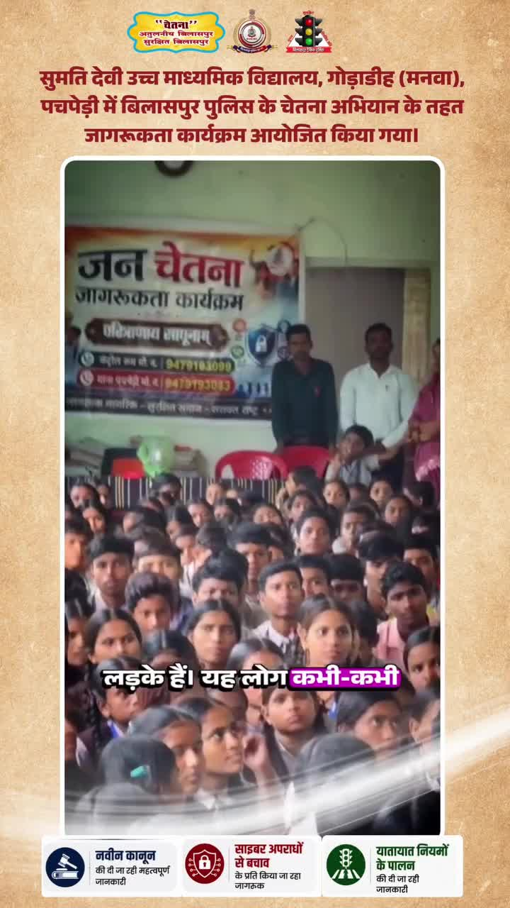
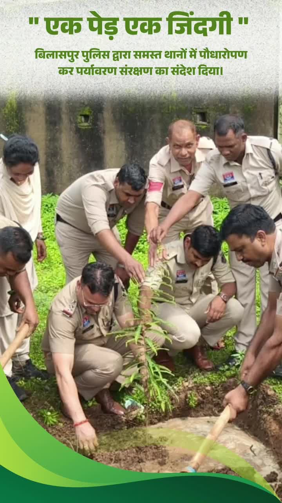
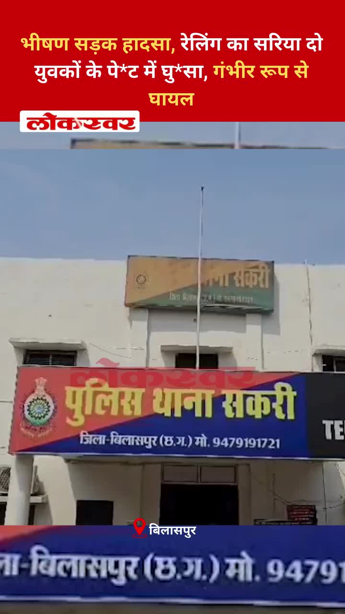

Bilaspur News Hub
1
BUSINESS
3
EDUCATION
2
EVENT
9
GOVERNMENT
6
HEALTH
2
INFRASTRUCTURE
39
INSTAGRAM NEWS
22
NEWS
10
POLICE
1
SOCIAL
7
YOUTUBE VIDEOS
BUSINESS1

The Hitavada · Scraped: 2026-07-31 08:36:34
State-owned GAIL and RCF have signed an MoU to develop a Rs 10,000 crore fertiliser project at Saoner. The initiative aims to boost domestic fertilizer production and reduce import dependence.
EDUCATION3

CG Wall · Published: Fri, 31 Ju | Scraped: 2026-07-31 16:01:38
दुर्गेश पांडेय, भाजपा शहर जिला मीडिया सहप्रभारी ने भ्रष्टाचार पर जीत के रूप में नई परीक्षा व्यवस्था का स्वागत किया। ये सुधार परीक्षा प्रणाली में निष्पक्षता और पारदर्शिता लाने का लक्ष्य रखते हैं।

Lokswar · Published: Fri, 31 Ju | Scraped: 2026-07-31 16:01:38
प्रद्युम्न तिवारी, डीआईईटी पेण्ड्रा के सहायक ग्रेड-03, को आपराधिक मामले में जेल जाने के बाद निलंबित कर दिया गया है। विभाग ने कानूनी मुद्दों में फंसे कर्मचारियों के प्रति सख्त रुख अपनाया है।
District Administration Bilaspur · Published: 2026-07-31 | Scraped: 2026-07-31 13:35:48
District Administration Bilaspur released a list of eligible and ineligible candidates for the lateral entry entrance exam on 02-08-2026 for Classes 11 Arts/Commerce at Prayas Residential School for boys and girls. The list helps students know their admission status for the upcoming session.
EVENT2

The Hitavada · Scraped: 2026-07-31 08:36:34
Indian athlete Sreeshankar secured his second consecutive Commonwealth Games long jump medal, making history with back-to-back achievements.

The Hitavada · Scraped: 2026-07-31 08:36:34
Indian sprinters Gavit and Basil finished first and second respectively in the men's 100m T47 event, marking a historic double for the nation. Their performance highlights India's growing presence in para-athletics.
GOVERNMENT9

Lokswar · Published: Fri, 31 Ju | Scraped: 2026-07-31 08:36:34
The Raipur government has prohibited the sale and use of analog paneer starting today. The move aims to ensure food safety and quality standards for consumers.
Lokswar · Published: Fri, 31 Ju | Scraped: 2026-07-31 13:35:48
Chief Minister Vishnu Deo Sings held talks with Prime Minister Narendra Modi in New Delhi, focusing on Bastar’s development agenda and upcoming projects. The meeting aimed to align state and central plans for regional growth.

Nai Dunia Bilaspur · Published: Fri, 31 Ju | Scraped: 2026-07-31 16:01:38
छत्तीसगढ़ हाई कोर्ट ने फैसला सुनाया कि जब तक विवाह की वैधता पर मामला विचाराधीन है, तब तक पत्नी को भरण-पोषण से वंचित नहीं किया जा सकता है। यह निर्णय कानूनी प्रक्रिया के दौरान पत्नी की वित्तीय सुरक्षा सुनिश्चित करता है।

CG Wall · Published: Fri, 31 Ju | Scraped: 2026-07-31 17:25:00
A defect was discovered in the Atal Bihari Vajpayee statue at Katghora’s Atal Complex, prompting the immediate suspension of a sub-engineer. Authorities have launched an inquiry to determine the cause of the flaw.

The Hitavada · Scraped: 2026-07-31 08:36:34
The Supreme Court ruled that pellet guns cannot be banned, allowing security forces to continue using them. The decision addresses ongoing debates about their impact in conflict zones.

The Hitavada · Scraped: 2026-07-31 08:36:34
Parliament approved the Anti-PaperLeak Bill after the Opposition staged a walkout. The legislation aims to curb unauthorized document leaks.
The Hitavada · Scraped: 2026-07-31 08:36:34
The Prevention of Insults to National Honour (Amendment) Bill, 2026 makes insulting Vande Mataram a punishable offence. It also reinforces penalties for other national honour violations.
The Hitavada · Scraped: 2026-07-31 08:36:34
Prime Minister Narendra Modi convened a high-level Cabinet meeting to discuss current geo-political developments and India's strategic responses. The session focused on diplomatic priorities and national security considerations.
BREAKINGDATIA records 71% voter turnout in Assembly bypoll / दतिया में विधानसभा उपचुनाव में 71% मतदान
The Hitavada · Scraped: 2026-07-31 08:36:34
The Assembly bypoll in Datia saw a voter turnout of 71%, indicating strong public participation. The results are awaited as the contest remains closely watched. The high turnout reflects the electorate's engagement in the regional political process.
HEALTH6

CG Wall · Published: Fri, 31 Ju | Scraped: 2026-07-31 13:35:48
The health department issued a stern warning, serving a notice to the BMO for negligence after a recent private hospital controversy. Authorities ordered village‑wise monitoring to ensure patient safety and accountability.

Lokswar · Published: Fri, 31 Ju | Scraped: 2026-07-31 13:35:48
A two‑day oral health camp organized by New Horizon Dental College at St. Vincent Pallotti School screened 1,049 children, providing early dental care assessments.
Lokswar · Published: Fri, 31 Ju | Scraped: 2026-07-31 13:35:48
Collector Sanjay Agarwal conducted a surprise inspection of the district hospital, targeting doctors missing duty. The action aims to improve attendance and patient care standards.
CG Wall · Published: Fri, 31 Ju | Scraped: 2026-07-31 16:01:38
जिले के कलेक्टर ने निजी अस्पताल में मरीजों को बंधक बनाए जाने के बाद स्वास्थ्य सुविधाओं का निरीक्षण किया और लापरवाही के खिलाफ चेतावनी दी। उन्होंने सेवाओं को अधिक संवेदनशील और जवाबदेह बनाने पर जोर दिया।

Lokswar · Published: Fri, 31 Ju | Scraped: 2026-07-31 17:25:00
The collector has ordered a strict investigation into alleged irregularities surrounding the construction of the modular eye operation theatre at Bilaspur District Hospital, focusing on quality, payments, and commission. The probe aims to ensure transparency and proper fund usage.
G News Bilaspur · Published: 2026-07-31 | Scraped: 2026-07-31 16:01:38
The collector visited the district hospital to assess health infrastructure and services, ensuring proper patient care and resource availability.
INFRASTRUCTURE2

Lokswar · Published: Fri, 31 Ju | Scraped: 2026-07-31 16:01:38
Chief Minister Vishnu Deo Sai has requested central approval for 2,305 new mobile towers to strengthen digital connectivity in remote Chhattisgarh regions. The plan will improve digital identity and communication infrastructure for underserved areas.

G News Bilaspur · Published: 2026-07-31 | Scraped: 2026-07-31 13:35:48
A severe road accident occurred near Kannan Pendari, resulting in multiple casualties. Authorities have launched an investigation and urged caution on the roads.
INSTAGRAM NEWS39
A devoted fan of actor Sanju Baba was photographed in Bilaspur, drawing attention on social media. The post highlights the actor's widespread popularity. Fans are eager to meet the star.
A dispute over handing over a deceased patient's body led to a Congress protest outside a private hospital in Bilaspur. The hospital claimed no bill was pending, but families allege unfair treatment. Authorities are investigating the matter.
A farmer's body was discovered in his backyard, with neck injuries suggesting foul play. Police have launched a murder investigation to identify the culprit. The case has shocked the local community.

An exclusive report reveals that over 200 prisoners at Bilaspur Central Jail are battling depression, raising concerns about mental health care in prisons. Authorities are planning counseling and support programs. The situation highlights the need for improved psychiatric services.
Traffic police warn that covering number plates with tape, foil or stickers to hide the number will attract heavy penalties. The crackdown aims to stop illegal modifications and improve road safety.
The popular Jatmai waterfall in Gariaband district is experiencing high water levels, drawing large numbers of devotees and tourists despite the rain. The natural beauty attracts visitors, creating a vibrant scene during the monsoon.

Police uncovered an interstate gang that defrauded people by falsely claiming to have found gold during excavations. The trio was arrested, ending a series of scams targeting gullible victims.
A user shared an appreciation post for a beautiful photograph, inviting others to showcase their best shots in the comments. The post encourages community engagement and sharing of local imagery.
Khudiya Dam, also known as the Rajiv Gandhi Reservoir, is a scenic water site nestled in the region, attracting tourists and nature lovers. Its beauty makes it a popular destination for picnics and photography.
A stunning rainbow illuminated Bilaspur's sky, creating a colorful masterpiece after the rain. The natural spectacle attracted many onlookers and was widely shared on social media.
During monsoon, Hanumat Khol Ghati in Chhattisgarh transforms into a breathtaking valley of lush greenery and cascading waters. The hidden beauty attracts trekkers and nature lovers, offering serene views and photography opportunities.

Legislative member Dharam Lal Kaushik participated in a large-scale tree planting and bicycle distribution drive organized by Bharat Scouts and Guides. The initiative aims to promote environmental awareness and provide sustainable transport options to locals.

The Bilaspur Police organized a Chetna (Awareness) campaign at Sumati Devi Higher Secondary School in Godadih, focusing on road safety and social awareness. Students participated actively, receiving information on crime prevention and community responsibility.
A serene view of Bilaspur under a blanket of clouds showcases the city's tranquil charm. The photograph highlights the natural beauty and atmospheric drama, offering a fresh perspective on the region.

Under the 'One Tree One Life' campaign, Bilaspur Police planted trees at every police station to promote environmental conservation. The initiative aims to raise awareness and contribute to a greener city.
The post shares a Sanskrit mantra dedicated to Lord Shiva, invoking his elephant‑crested, three‑eyed, ash‑anointed form and eternal purity. It reflects devotion and cultural heritage.
Aryan Films, in collaboration with Bilaspur Police, organized an awareness program at PGBT College to promote a vigilant society. The event highlighted community engagement and social responsibility.
A key review meeting in Delhi discussed accelerating Chhattisgarh’s rail projects, aiming for faster connectivity. The outcome is expected to boost regional development and reduce travel time.

भीषण सड़क हादसा, रेलिंग का सरिया दो युवकों के पेट में घुसा, गंभीर रूप से घायल #BilaspurNews #SakriPolice #RoadAccident #KananPendari #SimsHospital #Dial112 #SpeedControl #ChhattisgarhNews by @lokswar.in
किराना दुकान के विवाद में किसान की ह*त्या... डंडों से पीट-पीटकर उतारा मौ*त के घाट, दो आ*रोपी हिरासत में #KotaPolice #MurderCase #CrimeNews #BilaspurNews #KhurdurVillage #DisputeArrest #ChhattisgarhPolice #LawAndOrder by @lokswar.in
NEWS22

Nai Dunia Bilaspur · Published: Fri, 31 Ju | Scraped: 2026-07-31 08:36:34
<img src="https://img.naidunia.com/naidunia/ndnimg/31072026/31_07_2026-obscene_cd_scandal.jpg" />Obscene CD scandal: पूर्व मुख्यमंत्री भूपेश बघेल को हाई कोर्ट से एक महत्वपूर्ण राहत मिली है। हाई कोर्ट ने रायपुर स्थित सीबीआई की विशेष अदालत में चल रही ट्रायल कोर्ट की कार्यवाही पर अंतरिम रोक लगा दी है।

Lokswar · Published: Fri, 31 Ju | Scraped: 2026-07-31 08:36:34
<p>बीजापुर में लगातार हो रही भारी बारिश के बीच जिला प्रशासन ने त्वरित राहत एवं बचाव अभियान चलाकर गर्भवती महिला, नवजात शिशु और सात पर्यटकों को सुरक्षित बाहर निकाला। मुख्यमंत्री विष्णुदेव साय और प्रभारी मंत्री केदार कश्यप के निर्देश पर प्रशासन की टीमें लगातार राहत कार्य में जुटी हुई हैं।   लगातार

Lokswar · Published: Fri, 31 Ju | Scraped: 2026-07-31 08:36:34
<p>राजधानी रायपुर में अपराधियों और संदिग्ध गतिविधियों पर लगाम लगाने के लिए पुलिस ने तड़के बड़ा सत्यापन अभियान चलाया। बीएसयूपी कॉलोनियों और देवार डेरा में हुई इस कार्रवाई के दौरान 350 से अधिक मकानों की जांच की गई, जिसमें 80 से ज्यादा पुलिस अधिकारी और जवान शामिल रहे। अभियान के दौरान 8 संदिग्ध मिले, जि

Nai Dunia Bilaspur · Published: Fri, 31 Ju | Scraped: 2026-07-31 11:59:25
<img src="https://img.naidunia.com/naidunia/ndnimg/31072026/31_07_2026-cg_high_court_dowry.jpg" />छत्तीसगढ़ हाई कोर्ट ने नीट-यूजी-2026 की ओएमआर शीट में हेरफेर और कम अंक दिए जाने का आरोप लगाने वाले छात्र को राहत देने से इनकार कर दिया है।

Lokswar · Published: Fri, 31 Ju | Scraped: 2026-07-31 19:14:03
Terrorists opened fire in Jammu and Kashmir's Kulgam district on Friday, resulting in the death of a non-local laborer from Chhattisgarh. The incident has sparked condemnation and heightened security concerns in the region.

The Hitavada · Scraped: 2026-07-31 11:59:25
The Hitavada · Scraped: 2026-07-31 11:59:25
The Hitavada · Scraped: 2026-07-31 11:59:25
The Hitavada · Scraped: 2026-07-31 11:59:25
The Hitavada · Scraped: 2026-07-31 11:59:25
The Hitavada · Scraped: 2026-07-31 11:59:25
The Hitavada · Scraped: 2026-07-31 11:59:25
The Hitavada · Scraped: 2026-07-31 08:36:34
Hollywood actors George Clooney and Amal Clooney have left France amid spreading wildfires across Europe. The couple cited safety concerns as they returned to the UK.
The Hitavada · Scraped: 2026-07-31 08:36:34
The Hitavada · Scraped: 2026-07-31 08:36:34
The Hitavada · Scraped: 2026-07-31 08:36:34
The Hitavada · Scraped: 2026-07-31 08:36:34
The Hitavada · Scraped: 2026-07-31 08:36:34
The Hitavada · Scraped: 2026-07-31 08:36:34
The city experienced renewed monsoon activity with continuous rainfall, impacting daily life and traffic. Residents are advised to stay cautious and avoid flood-prone areas. The weather department expects the showers to continue for the next few days.
The Hitavada · Scraped: 2026-07-31 08:36:34
POLICE10

Nai Dunia Bilaspur · Published: Fri, 31 Ju | Scraped: 2026-07-31 05:31:25
A young man suffered a horrific road accident in Bilaspur when his bike lost control and crashed into a barricade, causing an iron pipe to pierce his stomach. The incident has sparked concern over road safety and prompted police investigation. Emergency services rushed him to hospital for surgery.

Lokswar · Published: Fri, 31 Ju | Scraped: 2026-07-31 08:36:34
A speeding car on Raipur Expressway Friday dragged a biker for 100 meters, causing fatal injuries. The incident highlights dangerous driving and calls for stricter traffic enforcement.

Lokswar · Published: Fri, 31 Ju | Scraped: 2026-07-31 08:36:34
Hyderabad cyber crime police registered a case over an alleged morphed and objectionable video of PM Narendra Modi. The complaint names several accounts, including Meta India’s head, for spreading the fake footage.
Lokswar · Published: Fri, 31 Ju | Scraped: 2026-07-31 13:35:48
Rishirh police raided a human trafficking ring following complaints, detaining eight individuals. The operation highlights ongoing efforts to combat illegal sex trade in the region.

CG Wall · Published: Fri, 31 Ju | Scraped: 2026-07-31 16:01:38
सिरगिट्टी में पुलिस ने नशाखोरों, अड्डेबाजों और फरार वारंटी समेत 11 लोगों को गिरफ्तार किया। यह अभियान क्षेत्र में कानून व्यवस्था को बहाल करने के लिए चलाया गया है।
The Hitavada · Scraped: 2026-07-31 08:36:34
Enforcement Directorate raided multiple locations linked to the 2022 Coimbatore car bomb blast, suspected to be inspired by ISIS. The operation seeks to uncover financing and logistics networks.
The Hitavada · Scraped: 2026-07-31 08:36:34
Opposition MPs staged a protest against police action taken on students and claimed that donations meant for the Ram Temple were stolen. The demonstration highlights tensions between the government and opposition over law enforcement and temple funds.
The Hitavada · Scraped: 2026-07-31 08:36:34
The Enforcement Directorate and RPZO detained K K Srivastava over a Rs 15 crore scam involving fake Smart City projects. The alleged fraud misled investors and authorities, prompting a crackdown. Authorities are investigating the network behind the fraudulent scheme.
The Hitavada · Scraped: 2026-07-31 08:36:34
Authorities began a rescue operation in Arang and Abhanpur after floodwaters inundated villages. Teams are using boats and helicopters to evacuate stranded residents. The situation remains critical as water levels continue to rise.

The Hitavada · Scraped: 2026-07-31 08:36:34
Floodwaters in Narayanpur forced the evacuation of 16 villagers, who were rescued by local authorities. The rescue team used boats to reach the affected households. Residents are being provided shelter and essential supplies.
SOCIAL1
Villagers protest coal depot's arbitrary actions, farmers take to streets / कोल डिपो की मनमानी के खिलाफ ग्रामीणों का गुस्सा, किसान सड़क पर उतरे
G News Bilaspur · Published: 2026-07-31 | Scraped: 2026-07-31 13:35:48
Angered by the coal depot's unchecked practices, villagers and farmers staged a street protest demanding accountability. The demonstration highlights local concerns over environmental and economic impacts.
YOUTUBE VIDEOS7
Bilaspur traffic police have initiated a special drive to improve road safety and curb violations. The campaign focuses on checking speed, helmets, and illegal parking across the city.
The OBC Mahasabha has presented several key demands to the Chhattisgarh government, urging greater representation and welfare measures. The announcement comes amid ongoing discussions on social justice and equity.


This is an evening final news update from Grand News Bilaspur dated July 31, 2026. It provides the latest local news and updates.
Angry villagers claim that the coal depot operators are exploiting patients for profit, endangering lives. The protest highlights alleged malpractice in essential supply during medical emergencies.
Reports indicate that underprivileged patients are being exploited to generate commissions, raising concerns about unethical medical practices. Authorities are urged to intervene and protect vulnerable patients.
Allegations of negligence at the Moppka animal shelter have raised concerns over animal welfare. An investigation is expected to address the reported lapses and ensure proper care.


Officials visited the hospital and spoke directly with patients to evaluate the quality of healthcare services. Their feedback will help identify shortcomings and improve the overall patient experience.